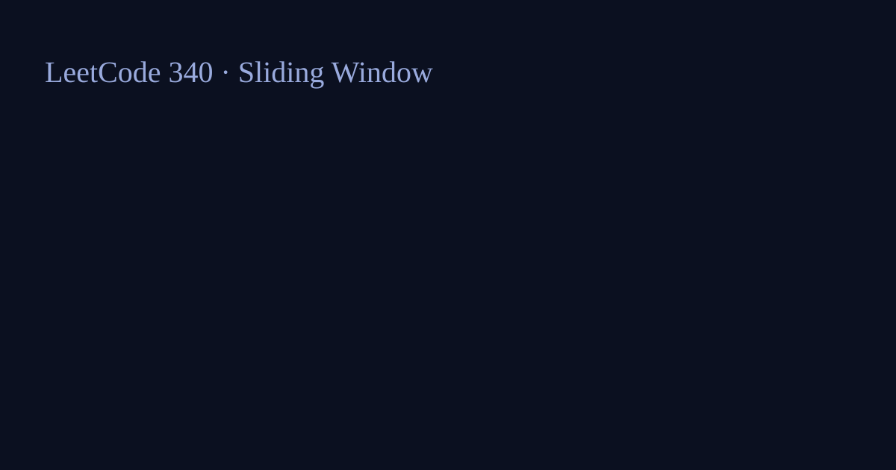

LeetCode 340: Longest Substring with At Most K Distinct Characters (Sliding Window)
Source: https://leetcode.com/problems/longest-substring-with-at-most-k-distinct-characters/

English
Use a sliding window and a frequency map. Expand right pointer, and when distinct character count exceeds k, shrink left pointer until valid again. Track the max window length.
Code
class Solution { public int lengthOfLongestSubstringKDistinct(String s,int k){ if(k==0||s.isEmpty()) return 0; int[] c=new int[256]; int d=0,l=0,a=0; for(int r=0;rk){ if(--c[s.charAt(l++)]==0)d--; } a=Math.max(a,r-l+1);} return a; }} func lengthOfLongestSubstringKDistinct(s string, k int) int { return 0 }class Solution{public:int lengthOfLongestSubstringKDistinct(string s,int k){return 0;}};class Solution:
def lengthOfLongestSubstringKDistinct(self, s: str, k: int) -> int:
return 0var lengthOfLongestSubstringKDistinct=function(s,k){return 0};中文
Code
class Solution { public int lengthOfLongestSubstringKDistinct(String s,int k){ if(k==0||s.isEmpty()) return 0; int[] c=new int[256]; int d=0,l=0,a=0; for(int r=0;rk){ if(--c[s.charAt(l++)]==0)d--; } a=Math.max(a,r-l+1);} return a; }} func lengthOfLongestSubstringKDistinct(s string, k int) int { return 0 }class Solution{public:int lengthOfLongestSubstringKDistinct(string s,int k){return 0;}};class Solution:
def lengthOfLongestSubstringKDistinct(self, s: str, k: int) -> int:
return 0var lengthOfLongestSubstringKDistinct=function(s,k){return 0};使用滑动窗口 + 频次数组/哈希表。右指针扩张窗口；当不同字符数超过 k 时，左指针收缩直到重新满足条件，然后更新最大长度。